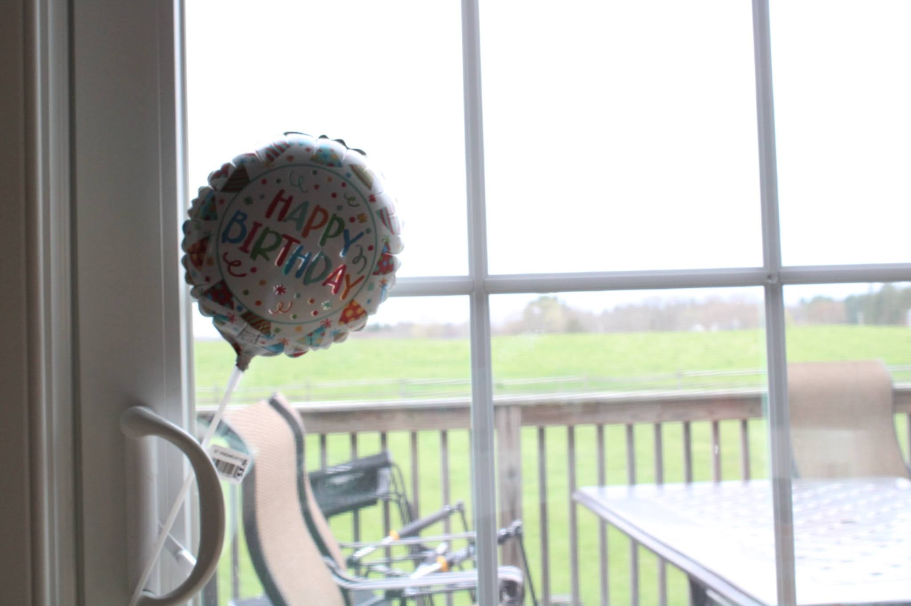
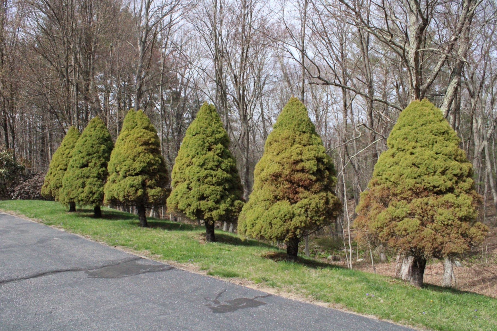
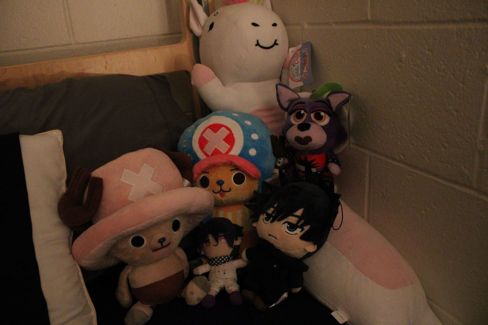
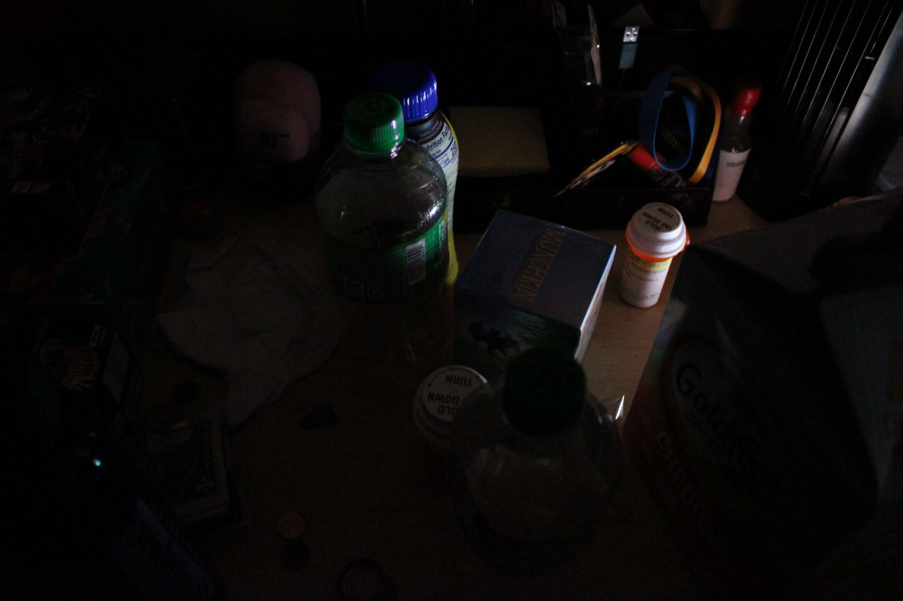
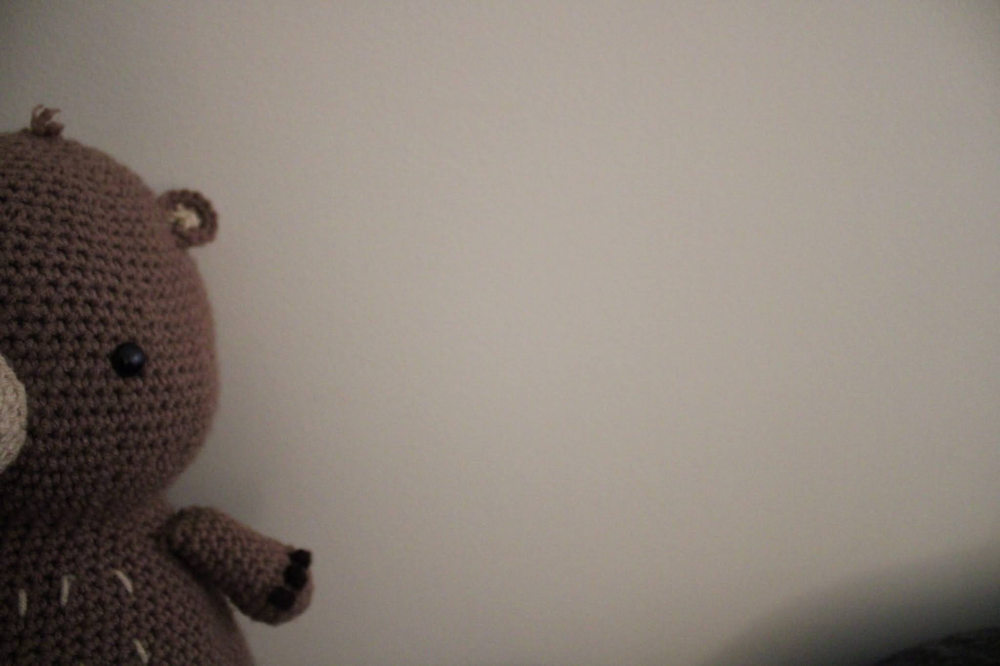
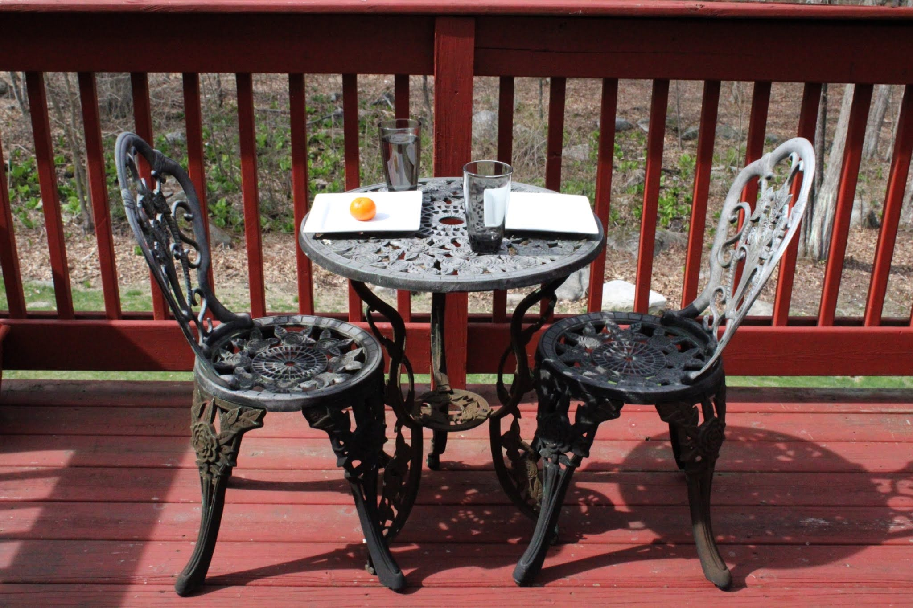
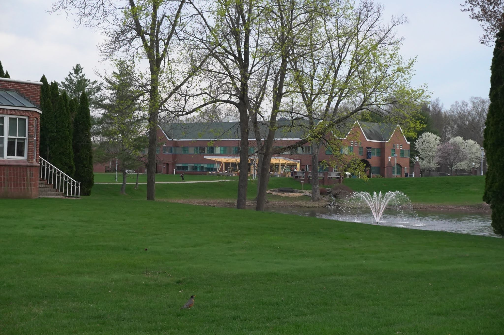

Two songs play during the exhibit: Sunny Day and Tension. Sunny Day plays at the beginning and end while Tension plays in the middle. Each visitor recieves a pencil and paper to take notes with. These notes, also have a section for optional questions, for example: "What have you said goobye to recently?" A tour guide leads groups of 5-9 people, answers questions but encourages personal interpretations. All objects are interactive and can be touched. Everyone has moments where they feel the weight of the world on their shoulders. When you enter, you're reminded of when life was easier, and felt more full. As you progress, tension plays, paths become stranger, and shadows deepen. During this, you may feel lost and thats okay. At the end, the light returns. You can see the exit, the same world as when you entered, but maybe you've changed a bit. Hard times are inevitable, but so is the light at the end of the tunnel.